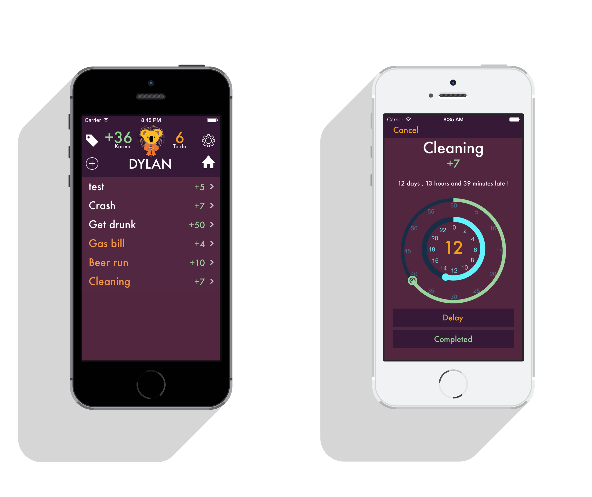
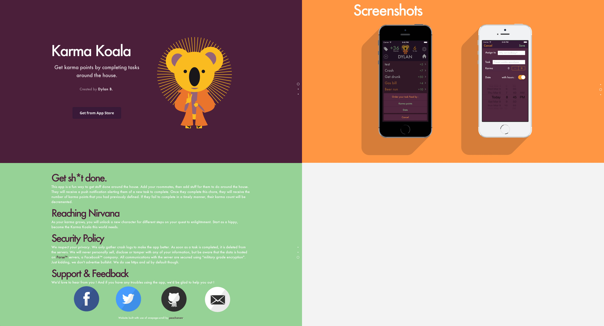
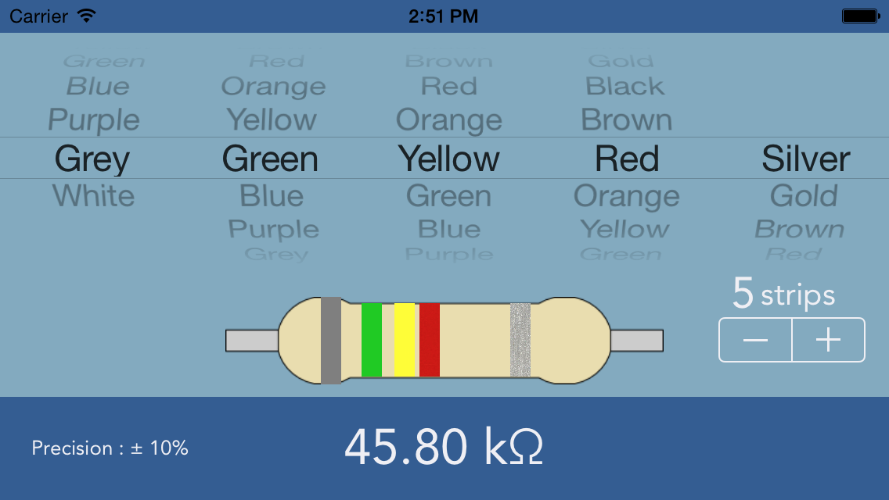
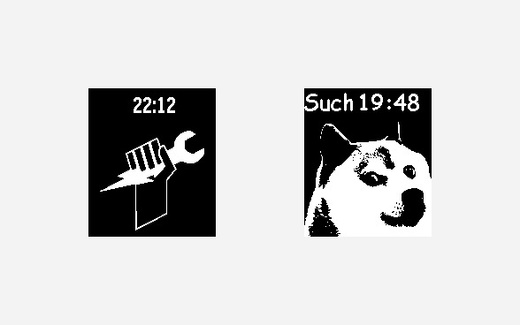
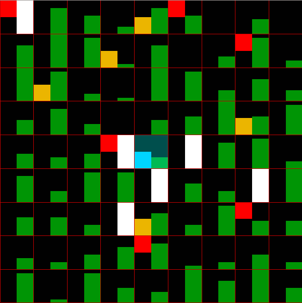
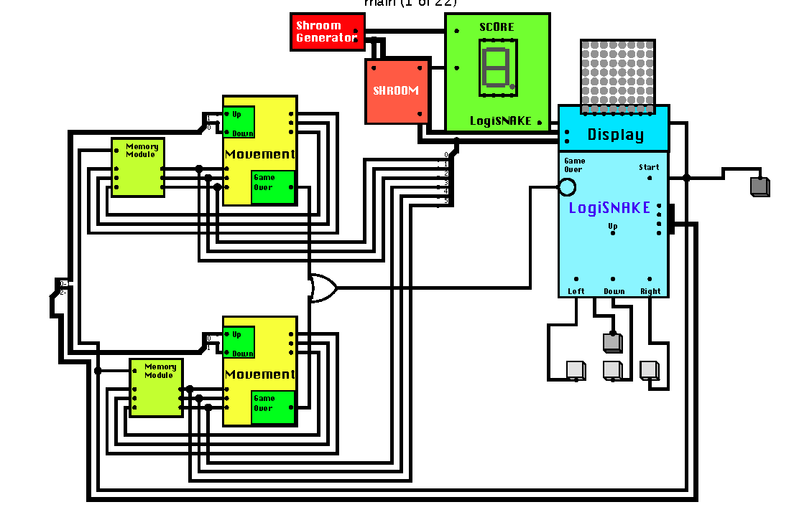

I'm a micro-engineering student @EPFL. I also enjoy coding, music, design, and I love travelling. I'm French and American, and now study in Switzerland. I help to promote the hacking culture and foster innovation through Hackers@EPFL, one amazing event at at time. I am a strong supporter of open-source : the source for all of my projects are available on Github.
Swiss Institute of Technology (EPFL)
3 Years Course
Lycée Sainte-Croix
Summa cum laude
CS101 - 102 @EPFL.
24h du Mans Classic, Le Mans, France.
Astroparticles and Cosmology lab, University Paris Diderot.
Style, Paris.
Objective-C
C
Javascript
HTML/CSS
ARM Assembly
LaTeX

KARMA KOALA



PEBBLE WATCHFACES


Bootstrap theme by BLACKTIE.CO Adapted by DYLAN BOURGEOIS